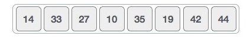
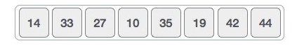
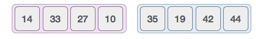
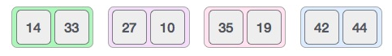
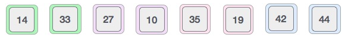
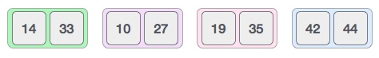
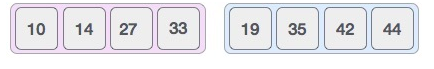

Implementation
The concept of Divide and Conquer involves three steps:
Step 1 : Divide the problem into multiple
subproblems.
Step 2 : Solve the Sub Problems. The idea is to break down the problem into atomic subproblems, where they are actually solved.
Step 3 : Combine the solutions of the subproblems to find the solution of the actual problem.
Step 2 : Solve the Sub Problems. The idea is to break down the problem into atomic subproblems, where they are actually solved.
Step 3 : Combine the solutions of the subproblems to find the solution of the actual problem.
So, the merge sort working rule involves the following steps:
Step 1 : Divide the unsorted array into
subarray, each containing a single element.
Step 2 : Take adjacent pairs of two single-element array and merge them to form an array of 2 elements.
Step 3 : Repeat the process till a single sorted array is obtained.
Consider an unsorted array

Step 2 : Take adjacent pairs of two single-element array and merge them to form an array of 2 elements.
Step 3 : Repeat the process till a single sorted array is obtained.
Consider an unsorted array

- Merge sort first divides the whole array iteratively into equal halves unless the atomic values are achieved. We see here that an array of 8 items is divided into two arrays of size 4.
- Now we divide these two arrays into halves.
- We further divide these arrays and we achieve atomic value which can no more be divided.
- Now, we first compare the element for each list and then combine them into another list in a sorted manner. We see that 14 and 33 are in sorted positions. We compare 27 and 10 and in the target list of 2 values we put 10 first, followed by 27. We change the order of 19 and 35 whereas 42 and 44 are placed sequentially.
- In the next iteration of the combining phase, we compare lists of two data values, and merge them into a list of found data values placing all in a sorted order.
- After the final merging, we get the sorted array as-




